Fiches Culture générale – 6e année
1011 fiches Culture générale pour le niveau 6e année, prêtes à imprimer : Mali, Maldives, Malaisie, Majorque et bien d'autres. Chaque fiche indique le niveau, le nombre de pages et un aperçu, avec un lien direct vers TpT.
1.011 ressources
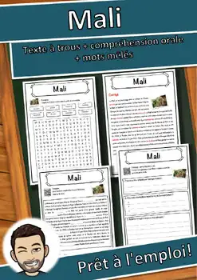
Mali – Compréhension de lecture : texte à trous, écoute et mots mêlés
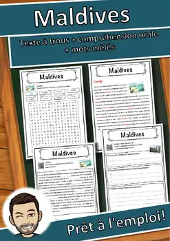
Maldives – Compréhension de lecture : texte à trous, écoute et mots mêlés
Malaisie – Compréhension de lecture : texte à trous, écoute et mots mêlés
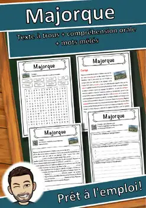
Majorque – Compréhension de lecture : texte à trous, écoute et mots mêlés
Maison-Blanche – Compréhension de lecture : texte à trous, écoute et mots mêlés
Maison de Médicis – Texte à trous, compréhension orale et mots mêlés
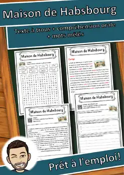
Maison de Habsbourg – Texte à trous, compréhension orale et mots mêlés
Maire – Compréhension de lecture : texte à trous, écoute et mots mêlés
Mahomet – Compréhension de lecture : texte à trous, écoute et mots mêlés
Magnésium – Compréhension de lecture : texte à trous, écoute et mots mêlés
Magie – Compréhension de lecture : texte à trous, écoute et mots mêlés
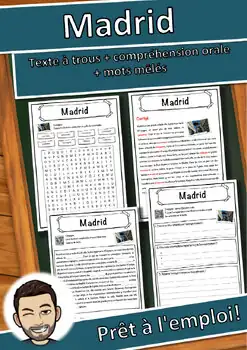
Madrid – Compréhension de lecture : texte à trous, écoute et mots mêlés
Madagascar – Compréhension de lecture : texte à trous, écoute et mots mêlés
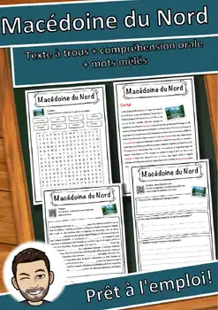
Macédoine du Nord – Texte à trous, compréhension orale et mots mêlés
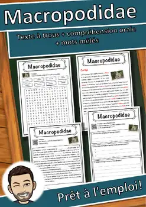
Macropodidae – Compréhension de lecture : texte à trous, écoute et mots mêlés
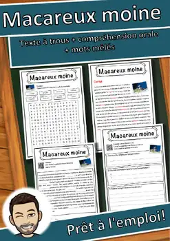
Macareux moine – Compréhension de lecture : texte à trous, écoute et mots mêlés
Léopard – Compréhension de lecture : texte à trous, écoute et mots mêlés
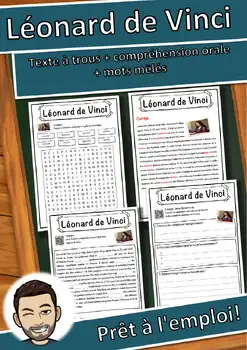
Léonard de Vinci – Texte à trous, compréhension orale et mots mêlés
Lumière – Compréhension de lecture : texte à trous, écoute et mots mêlés
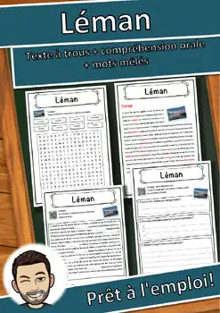
Léman – Compréhension de lecture : texte à trous, écoute et mots mêlés
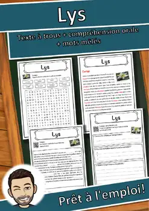
Lys – Compréhension de lecture : texte à trous, écoute et mots mêlés
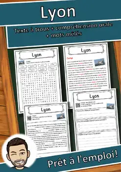
Lyon – Compréhension de lecture : texte à trous, écoute et mots mêlés
Lycanthrope – Compréhension de lecture : texte à trous, écoute et mots mêlés
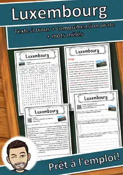
Luxembourg – Compréhension de lecture : texte à trous, écoute et mots mêlés
Lutra lutra – Compréhension de lecture : texte à trous, écoute et mots mêlés
Lunettes – Compréhension de lecture : texte à trous, écoute et mots mêlés
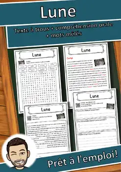
Lune – Compréhension de lecture : texte à trous, écoute et mots mêlés
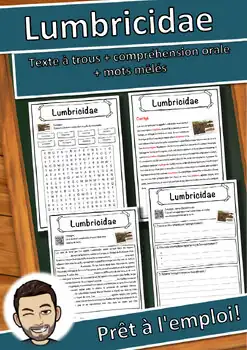
Lumbricidae – Compréhension de lecture : texte à trous, écoute et mots mêlés
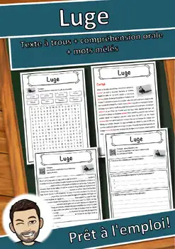
Luge – Compréhension de lecture : texte à trous, écoute et mots mêlés
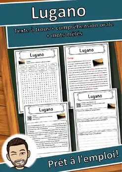
Lugano – Compréhension de lecture : texte à trous, écoute et mots mêlés
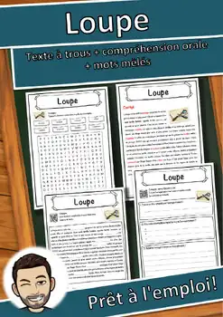
Loupe – Compréhension de lecture : texte à trous, écoute et mots mêlés
Louis Pasteur – Compréhension de lecture : texte à trous, écoute et mots mêlés
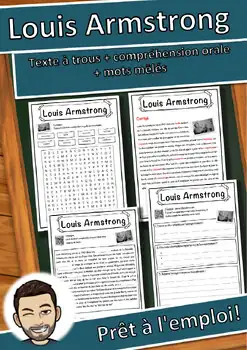
Louis Armstrong – Compréhension de lecture : texte à trous, écoute et mots mêlés
Loterie – Compréhension de lecture : texte à trous, écoute et mots mêlés
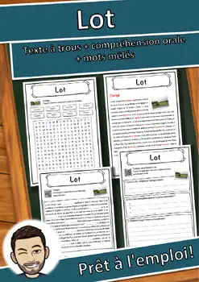
Lot – Compréhension de lecture : texte à trous, écoute et mots mêlés
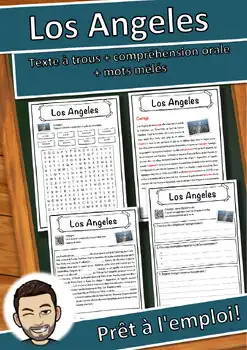
Los Angeles – Compréhension de lecture : texte à trous, écoute et mots mêlés

Lorelei – Compréhension de lecture : texte à trous, écoute et mots mêlés
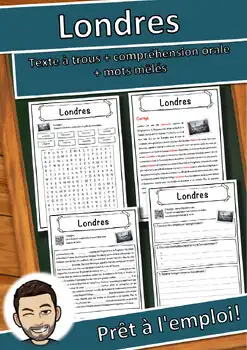
Londres – Compréhension de lecture : texte à trous, écoute et mots mêlés
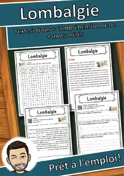
Lombalgie – Compréhension de lecture : texte à trous, écoute et mots mêlés
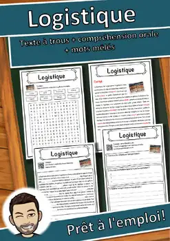
Logistique – Compréhension de lecture : texte à trous, écoute et mots mêlés
Locomotive – Compréhension de lecture : texte à trous, écoute et mots mêlés
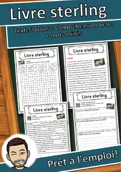
Livre sterling – Compréhension de lecture : texte à trous, écoute et mots mêlés
Livre – Compréhension de lecture : texte à trous, écoute et mots mêlés
Liverpool – Compréhension de lecture : texte à trous, écoute et mots mêlés
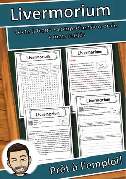
Livermorium – Compréhension de lecture : texte à trous, écoute et mots mêlés
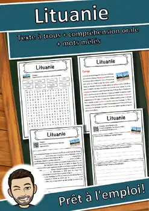
Lituanie – Compréhension de lecture : texte à trous, écoute et mots mêlés
Lithium – Compréhension de lecture : texte à trous, écoute et mots mêlés
Lisbonne – Compréhension de lecture : texte à trous, écoute et mots mêlés
Aucune ressource trouvée – essaie un autre mot ou un autre filtre.